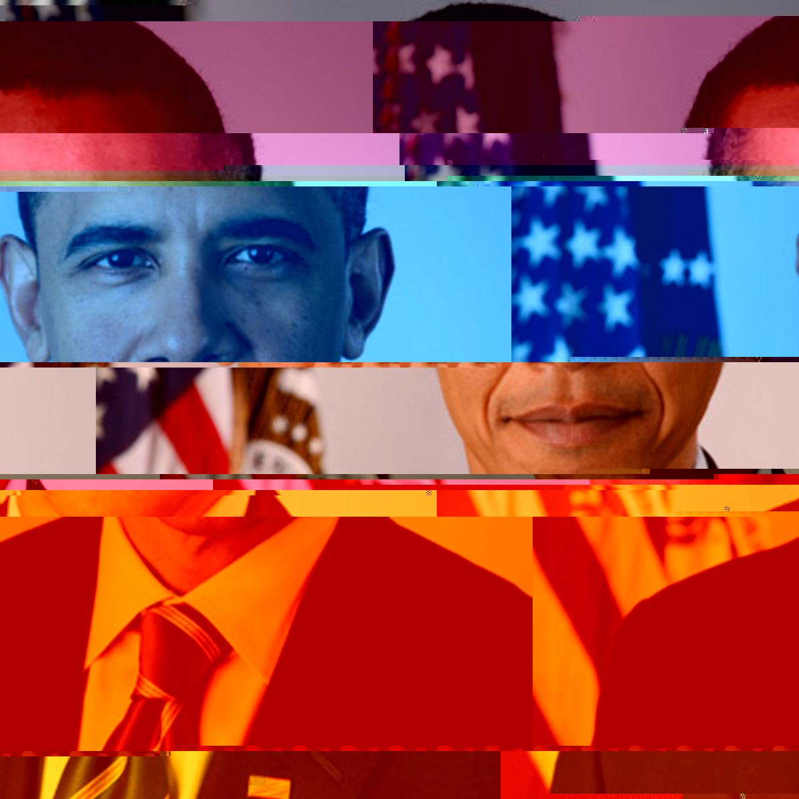
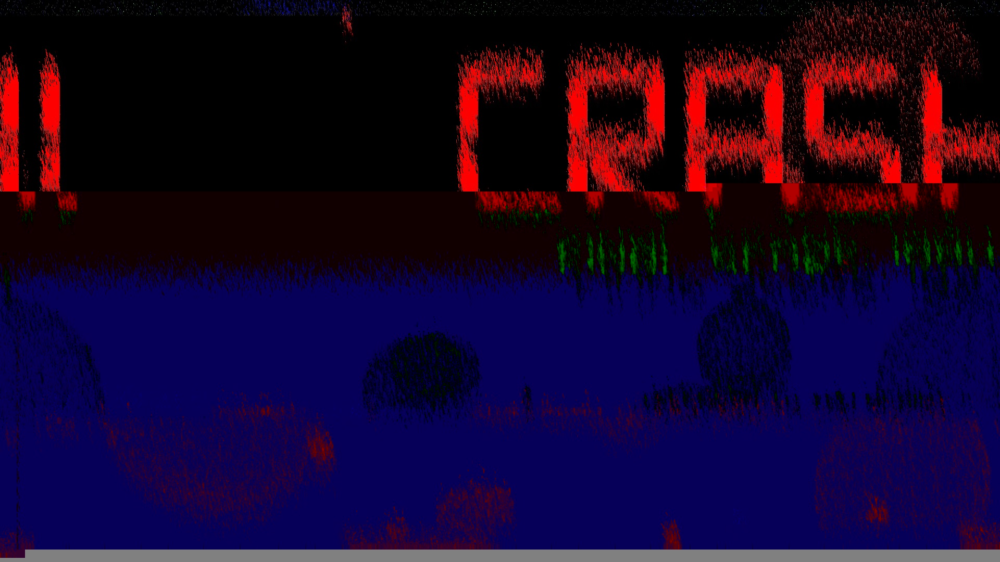

Glitch Art: A Technological Transformation of the Once-Familiar
By Matthew Hillmer - Published on 10/17/19, Updated 12/12/19

1. "ObamaGlitch"
This is a pitcture of Obama, except unlike normal pictures of Obama, this one has glitches in it, and that makes it cool. Specifically, this was created using a technique known as "Databending", where, in this case, I opened the image as text in Notepad and edited the text to goof up the image in ways that turned out to look pretty interesting. This was the beginning of a series of glitched images I created by modifying the same original portrait of our 44th President in various glitchy ways.
2. "ObamaInvert"
Our second glitched portrait of Obama was created by loading the image as raw data in Audacity and applying an audio invert effect to it. Cool!

3. "PinkObama"
Our third glitched portrait of Obama was also created by loading the image as raw data in Audacity, but this time I used different effects.
4. "ObamaSort"
Our fourth glitched portrait of Obama was created using a python script that executed a technique known as Pixel Sorting.
5. "ObamaDoor"
Our fifth and final Obama Glitch is actually a video created using a video technique known as Datamoshing. I like this one.
--------------------------------------------------
Bonus: The background image of this page actually also started as the same picture of Obama, but it got so distorted in Audacity that you can't even tell any more, and I think that's neat!
--------------------------------------------------
So I suppose now we're going to be moving on to some non-Obama glitch art, just some other images and ideas that I thought might look interesting.
6. "Boom"
This is an image of an explosion that has been pixel sorted using the same method as ObamaSort.
7. "Cool"
This one's a picture of me wearing some goofy sunglasses that I messed around with in Audacity, I thought it looked cool.
8. "Selfie"
Another picture of myself that was edited in Audacity, this time layered over a second completely unrelated picture of myself that caused some weird green line artifacting over the first image that I thought ended up looking neat.
9. "Costanza"
This is George Costanza from Seinfeld but I goofed with the picture in Audacity until it looked like this.
10. "The Glitch"
My tenth and final glitch thing here is a video of Kanye saying he's "The Glitch", except I ruined it with Datamoshing so he's literally a glitch. Enjoy!
--------------------------------------------------
12/12 Final Portfolio Additions
--------------------------------------------------

Bonus 1: "Crash"
This is a screenshot from my planets game that I edited using text-edit databending and pixel-sorting.
Bonus 2: "Desktop"
This is a screenshot of my desktop that I edited using text-edit databending and pixel-sorting. For the pixel-sorting, I did something different here in the sense that I used a picture of a smiley face as an image mask on one of the pixel-sort passes, so some of the pixels are sorted in the shape of a smiley face.